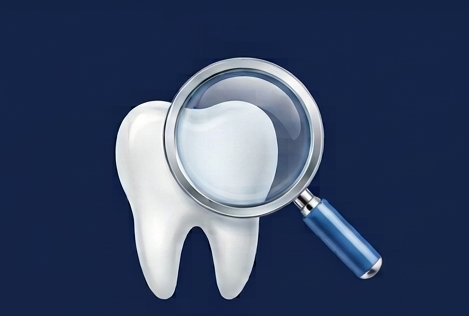
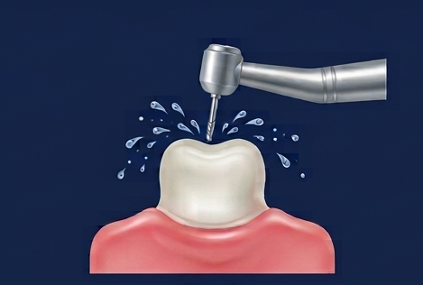
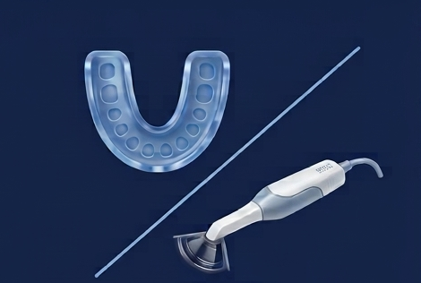
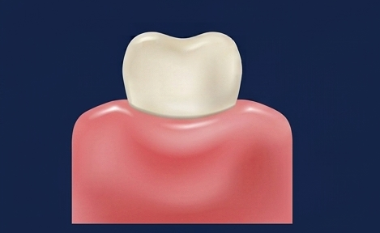
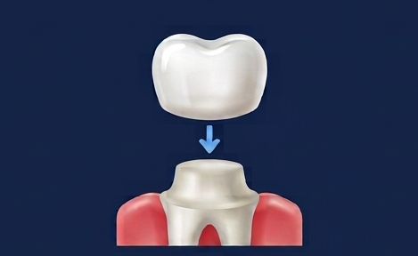
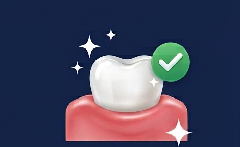

A custom-made cap that covers and protects a damaged or weakened tooth — restoring its strength, shape and appearance.
Think of it as a tailor-made helmet for a tooth that needs a little extra strength.
A dental crown is a custom-made cap that fits snugly over an entire tooth, from the gum line up. It's shaped and coloured to blend in with your natural teeth, so most people won't be able to tell it's there.
Crowns are used when a tooth is too damaged for a simple filling but is still worth saving. By covering the whole tooth, a crown seals and protects what's left underneath — letting you bite, chew and smile with confidence again.
Your dentist may recommend a crown in any of these common situations.
A crown holds a fragile or cracked tooth together and stops the damage from spreading.
When a filling is too big for the tooth to support on its own, a crown restores its strength.
A treated tooth becomes brittle. A crown protects it so it can keep working for years.
Grinding or acid wear can flatten teeth over time — a crown rebuilds their natural shape.
Crowns can improve the colour and shape of a misshapen or badly discoloured tooth.
Crowns anchor a dental bridge or finish an implant, replacing a missing tooth naturally.
Here's exactly how the process works, from your first visit to your finished smile.
Your crown is custom-made in a dental lab, so treatment is completed over two visits — usually a couple of weeks apart.

We examine your tooth, take X-rays if needed, and create a personalised treatment plan.
Visit 1
The tooth is gently reshaped to make room for the crown.
Visit 1
An impression or digital scan is taken to create a custom crown that fits perfectly.
Visit 1
A temporary crown is placed to protect your tooth while your custom crown is made.
Visit 1
Your custom crown is checked for fit, shape and colour, then adjusted for comfort.
Visit 2
The crown is securely cemented in place, restoring strength and a natural smile.
Visit 2With CEREC technology, your crown is designed, milled and fitted in a single visit — no impressions to send off, no temporary crown and no second appointment.
Crowns come in different materials. Your dentist helps you pick the best fit for the tooth, your bite and your budget.
The most natural-looking option, prized for front teeth where appearance matters most.
Best for a natural lookExceptionally tough and long-lasting while still tooth-coloured — great for back teeth.
Strongest & durableA metal core for strength with a porcelain coating for a natural finish — a proven all-rounder.
Strength + looksExtremely durable and gentle on opposing teeth. Ideal for out-of-sight molars.
Longest lastingA crown isn't fussy — treat it like a natural tooth and it will serve you well for years.
The things patients ask us most about getting a crown.
A crown restores a damaged tooth — but if a tooth is missing entirely, here are the other ways we can rebuild your smile.